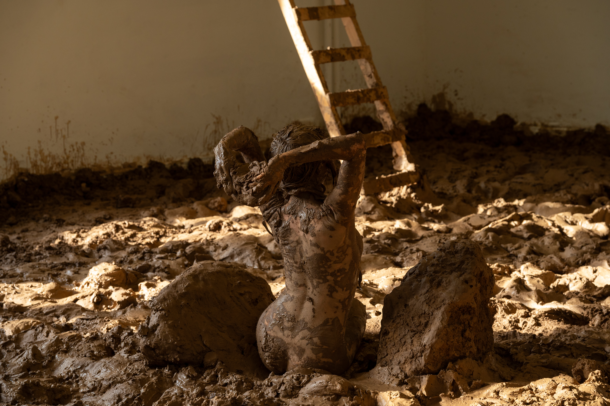
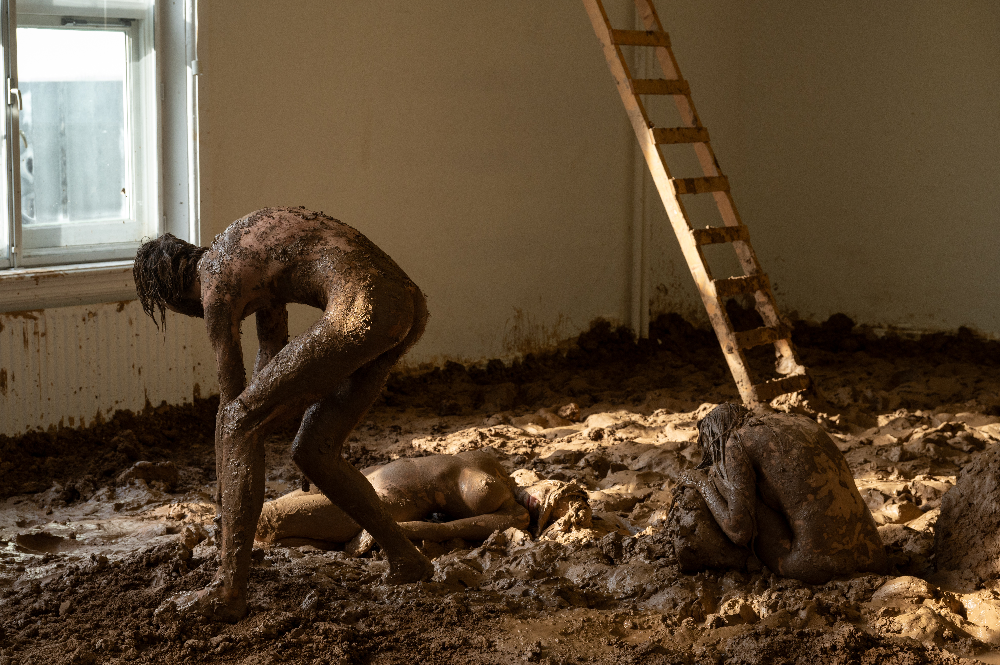

baksteen fabriek

detalles acá
Moverse sin un propósito ni un destino claros; convertirnos en el espacio donde habitamos; y observar lo que le sucede al cuerpo humano cuando se le despoja de su función.
baksteen fabriek es la última pieza realizada por la artista en colaboración con su productora krumai. Esta pieza formó parte del 2026 KABK Graduation Show.
Esta es una obra que se centra en el desarrollo simultáneo de la materialidad y el cuerpo. Es una exploración a la pregunta: ¿cómo es que el cuerpo se mueve y se desplaza por un cuarto (por un espacio) cuando su función —su manera de existir de manera utilitaria— desaparece?
El proyecto fue creado a base de la intervención del techo y el piso, convirtiendo el cuarto en un nuevo ambiente donde los cuerpos puedan ejecutar su acción y desarrollarse.
El piso se cubrió con trece (13) toneladas de arcilla procedente de Alemania. Se quitaron los paneles de durlock para exponer los zócalos originales del edificio, mientras caía agua del techo. Los performers estarían en este espacio durante intervalos de tiempo aleatorios a lo largo de seis (6) días.
Performers e itinerario:
Días 1, 2 y 3: Jacobus Benning, Adrianna Wojtylowicz y Catarina.
Día 6: Bo Oskamp, Jens Klitte Mogensen y Martina Parma Muñoz.
Solo performances:
Día 4: Mayuka Kowagachi.
Día 5: Zacharias Theodosakis.
Fotografía por: Eric de Vries Y Andrea Nino

La gente también podía entrar al espacio.
